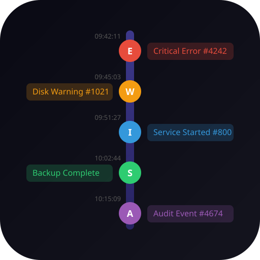
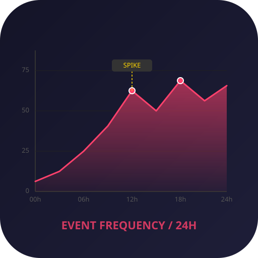
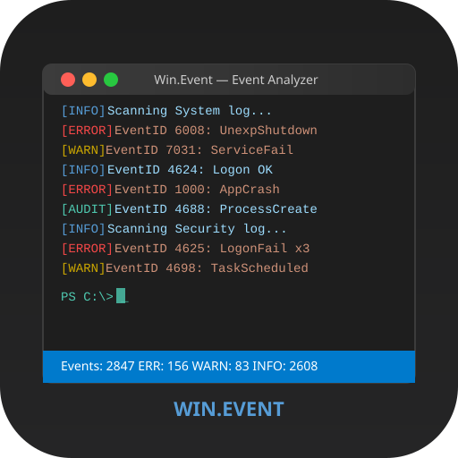

Win.Event — 아이콘 후보 10종
Windows 이벤트 로그 분석기
01 event_log_scroll
02 warning_shield
03 magnifier_log

04 timeline_events05 error_burst
06 filter_funnel
07 windows_event_viewer

08 chart_analysis09 circuit_alert

10 dark_console